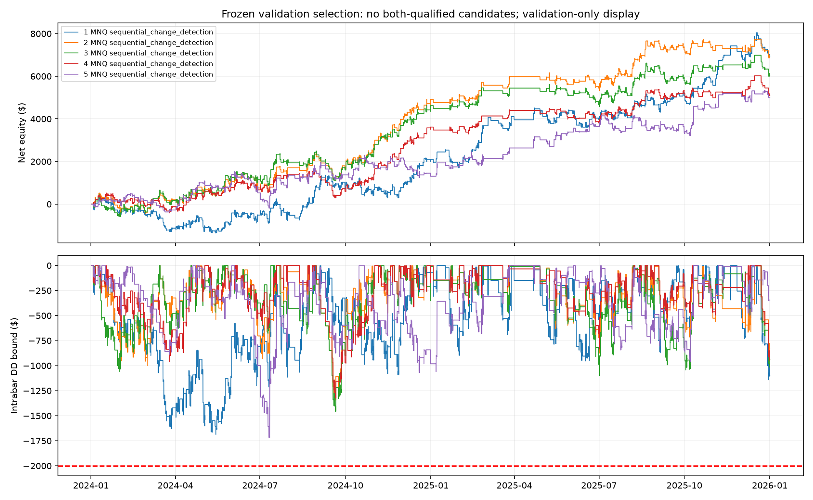

MNQ and MES · Five new entry mechanisms · 400 configurations per mechanism
No qualifying replacement. TRAIN: 136 positive-net/sub-$2,000-DD cases and 0 full qualifiers. VALIDATION: 184 positive-net/sub-$2,000-DD cases and 25 scenario qualifiers. Both: 40 basic profit/DD passers, 0 full qualifiers.
All parameters and analog-training examples were frozen before validation prices were loaded. Validation remains previously observed model-selection data, not independent confirmation. TEST stayed closed. No model was deployed or automatically promoted.
| family | configurations | train_positive_dd | train_qualified | validation_positive_dd | validation_qualified | both |
|---|---|---|---|---|---|---|
| auction_gap_repair | 400 | 3 | 0 | 42 | 2 | 0 |
| previous_value_migration | 400 | 55 | 0 | 19 | 0 | 0 |
| high_volume_absorption | 400 | 3 | 0 | 20 | 7 | 0 |
| sequential_change_detection | 400 | 49 | 0 | 47 | 13 | 0 |
| historical_analog_forecast | 400 | 26 | 0 | 56 | 3 | 0 |
No candidates passed both sets of gates.
| ID | Market | Mechanism | TRAIN net | TRAIN intrabar DD | VAL net | VAL intrabar DD | VAL trades | TRAIN qualified | VAL qualified |
|---|---|---|---|---|---|---|---|---|---|
| frontier_5161f4f83dfd3f295257 | MNQ | sequential_change_detection | $1,697.50 | $1,833.50 | $6,945.50 | $1,686.75 | 832 | False | True |
| frontier_0a15155a3055cbf6bcdb | MNQ | sequential_change_detection | $3,231.00 | $1,636.25 | $6,902.50 | $1,344.75 | 437 | False | True |
| frontier_aa5a391c2976ec59de1a | MNQ | sequential_change_detection | $2,748.50 | $1,847.50 | $6,047.50 | $1,456.75 | 492 | False | True |
| frontier_fcc4e4aaddf16720212c | MNQ | sequential_change_detection | $2,226.00 | $1,815.50 | $5,086.50 | $1,323.25 | 502 | False | True |
| frontier_47ff7b28f1724748853d | MNQ | sequential_change_detection | $204.00 | $1,816.00 | $4,994.50 | $1,717.25 | 383 | False | True |

Auction gap repair trades toward the previous RTH close while an opening gap remains unresolved. Volume-profile migration follows acceptance of a shifted prior-session volume mode. Absorption uses high volume, a small body, and rejection wicks. Sequential CUSUM detects accumulated standardized return changes. Historical analogs use a frozen nearest-neighbor model of completed candle/volume states. Volume profiles allocate bar volume to typical-price bins; they are not true trade-at-price or order-book reconstructions.
The 2,000 configurations cover five correlated hypotheses and 917 distinct TRAIN signal paths. Forty-one targeted tests passed before execution. 10,000 ledgers covering 916,085 trades reconcile. Selected validation curves and isolated fill samples passed audit. No validation account was replayed for reporting. The analog model uses 21 neighbors, a fixed2,048-example cap, TRAIN-only scaling, and an eight-day gap before each evaluated year. Four annual TRAIN accounts reset; validation uses one continuous account. Fees, fills, risk controls, qualification gates, and the strict $2,000 drawdown ceiling were preserved.
Cash/no-trade benchmark is zero P&L and zero drawdown; it does not meet trade-count gates. Intrabar drawdown is a conservative OHLC bound. Funded-account checks use provisional scenarios. The 50% consistency rule remains an evaluation-account-only diagnostic.
All TRAIN results · All VAL results · Frozen protocol · Ledger audit · Model and fill audit
# 2,000 new futures configurations
Completed all2,000 TRAIN and2,000 frozen VALIDATION evaluations. TEST was not accessed.
Five auction, event-detection and analog mechanisms differ from both previous entry libraries. These are correlated configurations, not2,000 independent discoveries.
Counts: {"evaluated": 2000, "train_positive_dd": 136, "train_qualified": 0, "validation_positive_dd": 184, "validation_qualified": 25, "both_qualified": 0}
TRAIN=2020-2023, four reset annual accounts. VALIDATION=2024-2025, one continuous account. Fitted forecasting coefficients never learn from evaluated years or validation. Prior validation is consumed and used here for model selection; this is not unseen confirmation.
## Mechanisms and results
| Family | Trials | TRAIN profit/DD | TRAIN qualified | VAL profit/DD | VAL qualified | Both |
|---|---:|---:|---:|---:|---:|---:|
| auction_gap_repair | 400 | 3 | 0 | 42 | 2 | 0 |
| previous_value_migration | 400 | 55 | 0 | 19 | 0 | 0 |
| high_volume_absorption | 400 | 3 | 0 | 20 | 7 | 0 |
| sequential_change_detection | 400 | 49 | 0 | 47 | 13 | 0 |
| historical_analog_forecast | 400 | 26 | 0 | 56 | 3 | 0 |
## Top5 passing both, ranked on validation
| ID | Market / mechanism | Net P&L | Intrabar DD | Trades | TRAIN qualified |
|---|---|---:|---:|---:|---|
## Top5 validation only; TRAIN flags matter
| ID | Market / mechanism | Net P&L | Intrabar DD | Trades | TRAIN qualified |
|---|---|---:|---:|---:|---|
| frontier_5161f4f83dfd3f295257 | MNQ / sequential_change_detection | $6,945.50 | $1,686.75 | 832 | False |
| frontier_0a15155a3055cbf6bcdb | MNQ / sequential_change_detection | $6,902.50 | $1,344.75 | 437 | False |
| frontier_aa5a391c2976ec59de1a | MNQ / sequential_change_detection | $6,047.50 | $1,456.75 | 492 | False |
| frontier_fcc4e4aaddf16720212c | MNQ / sequential_change_detection | $5,086.50 | $1,323.25 | 502 | False |
| frontier_47ff7b28f1724748853d | MNQ / sequential_change_detection | $4,994.50 | $1,717.25 | 383 | False |
## Top5 training
| ID | Market / mechanism | Net P&L | Intrabar DD | Trades | TRAIN qualified |
|---|---|---:|---:|---:|---|
| frontier_63a2bae7e098d4427cf0 | MNQ / historical_analog_forecast | $6,629.50 | $1,819.00 | 1074 | False |
| frontier_a65913c330d52bd96d43 | MNQ / previous_value_migration | $5,790.50 | $1,007.88 | 484 | False |
| frontier_0fde532053d3c0661a9d | MNQ / sequential_change_detection | $5,175.00 | $1,842.50 | 1182 | False |
| frontier_154e44039ad3795ba764 | MNQ / previous_value_migration | $5,088.00 | $1,228.25 | 511 | False |
| frontier_cd13db32eac8716dba1b | MNQ / previous_value_migration | $4,876.00 | $1,739.75 | 675 | False |
## Limitations
The unchanged15m engine uses next-open execution, actual contract economics, fees, spread, slippage, conservative OHLC handling, volume participation and risk locks. Intrabar DD is an OHLC adverse bound, not observed tick-order equity. Funded rules are provisional scenarios, not verified account certification.50%consistency remains evaluation-account-phase-only. Annual reset profits/DD are not a continuous four-year account path. TRAIN top5 have independent fill samples and2x cost diagnostics in training_stress.json; all-case ledgers reconcile. No strategy is promoted, deployed, or claimed independently profitable.
## Entry hypotheses
- **auction_gap_repair**: An unresolved RTH opening gap may revisit the previous RTH closing auction; scheduled overnight information can instead sustain the gap.
- **previous_value_migration**: A shift in the previous completed RTH volume-profile mode may attract following-session acceptance; no true trade-at-price/order-book data are claimed.
- **high_volume_absorption**: Large bar volume with small body and asymmetric rejection wicks may indicate failed directional pressure; OHLCV is only a proxy.
- **sequential_change_detection**: A sequential standardized-return CUSUM can identify accumulated distribution changes rather than a fixed-horizon momentum threshold.
- **historical_analog_forecast**: Nearest historical TRAIN candle/volume states forecast the next return; fails when apparent analogs have no stable conditional edge.